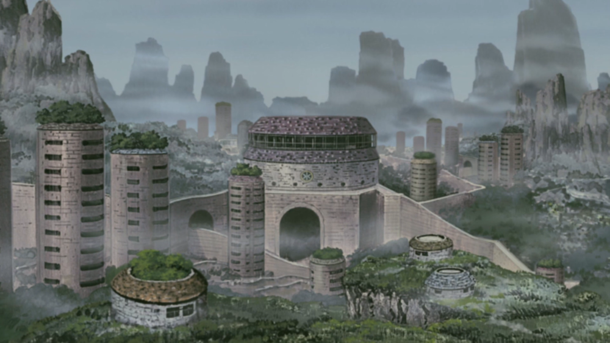
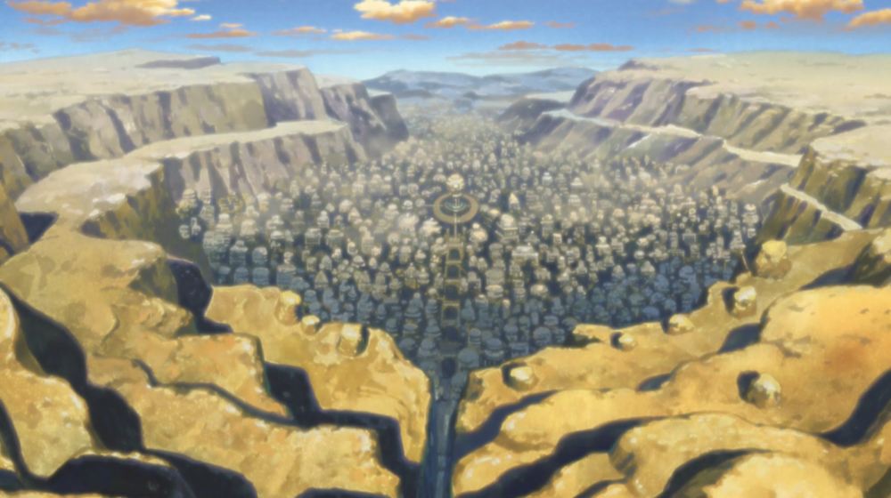

Kirigakure is the hidden village of the Land of Water. As the village of one of the Five Great Shinobi Countries, Kiri has a Kage as its leader known as the Mizukage, of which there have been six in its history.

Sunagakure is the hidden village of the Land of Wind. As the village of one of the Five Great Shinobi Countries, Sunagakure has a Kage as its leader known as the Kazekage, of which there have been five in its history.